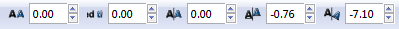

Час. Креирање векторске графике¶
- На овом часу ћемо говорити о:
цртању векторских објеката.
Програм Inkscape омогућава креирање основних геометријских облика избором одговарајуће алатке из Toolbox.
Да бисмо исцртали правилни многоугао користимо опцију Create stars and polygons , а затим у Tool Controls Bar одаберемо алатку  и унесемо број углова
и унесемо број углова  . Када смо подесили број углова, држимо притиснут леви тастер миша и развлачимо многоугао.
. Када смо подесили број углова, држимо притиснут леви тастер миша и развлачимо многоугао.
{kind=link}
Опис поступка за исцртавање многоугла можете погледати на доњем видеу:
Видео
На сличан начин исцртавамо звезду оодабиром алатке алатке .
Опис поступка за исцртавање звезде можете погледати на доњем видеу:
Видео
Да бисмо исцртали спирале користимо алатку Create spirals  и држимо притиснут леви тастер миша, развучемо спиралу.
и држимо притиснут леви тастер миша, развучемо спиралу.
Опис поступка за исцртавање спирале можете погледати на доњем видеу:
Видео
Цртање линија¶
За цртање правих и неправилних линија користимо алатку Draw freehand lines  .
.
Да бисмо нацртали праву линију кликнемо левим тастером миша на страницу, затим преместимо курсор миша на место где желимо да буде крај дужи и поново кликнемо на страницу.
За исцртавање неправилних линија потребно је да кликнемо левим тастером миша на страницу држимо га притиснутог док цртамо линију жељеног облика. Када отпустимо тастер миша завршавамо исцртавање линије.
Опис поступка за исцртавање правих и неправилних линија можете погледати на доњем видеу:
Видео
За цртање изломљених линија користимо алатку Bezier .
{kind=link}
Да бисмо исцртали изломљене линије кликнемо левим тастером миша на страницу, затим преместимо курсор миша на место где желимо да изломимо линију, поново кликнемо и преместимо курсор миша, па понављамо ове радње све до крајње тачке изломљене линије, коју означавамо двокликом на страницу.
Опис поступка за исцртавање изломљене линије можете погледати на доњем видеу:
Видео
Уметност лепог писања¶
У програму Inkscape могуће је креирати објекте налик лепом писању - калиграфије. То остварујемо коришћењем алатке Calligraphy .
{kind=link}
Одабиром ове алатке добијамо могућност да цртамо посебне врсте линија - дебље или тање, под одређеним углом и правцем.
Опис поступка за лепо писање - калиграфија можете погледати на доњем видеу:
Видео
Креирање текста¶
Такође, у програму Inkscape је могуће креирати комплексне текстове, наслове, банере, логое или натписе.
За креирање текста потребно је да изаберемо алатку , кликнемо на страницу и унесемо текст.
{kind=link}
За форматирање текста потребно је да га селектујемо и из менија Text одаберемо опцију Convert to Text.
На тексту можемо вршити измене:
фонта и његове величине;
хоризонталног и вертикалног растојања између речи или слова;
ротирања слова.
Да бисмо направили те измене потребно је да кликнемо између карактера и изаберемо одговарајуће подешавање у Tool Controls Bar .
{kind=link}
Опис поступка за креирање текста можете погледати на доњем видеу:
Видео
- Шта смо научили?
да векторску графику можемо да креирамо и обрађујемо у програму Inkscape;
да програм Inkscape омогућава креирање основних геометријских објеката избором одговарајуће алатке из Toolbox;
да у програму Inkscape можемо да креирамо велике и комплексне текстове, али и наслове, банере, логое или натписе.